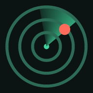

Signal SweepFinds AirTags and other Find My trackers that are away from their owner, plus Tile, Samsung SmartTag, Google Find My Device tags, and unknown devices. Follow one with the hot/cold finder.
A hidden camera's lens throws back a tiny, sharp point of light toward the light source. Point the back camera at places a camera could hide and look for marked points that stay put as you move a little.
Turn the room lights off, then start the camera.
Darken the room. Hold a flashlight right next to your phone's camera, or use the Flashlight button when your phone offers it. Sweep slowly across smoke detectors, clocks, chargers, vents, shelves and mirrors. A real lens gives a steady pinpoint that stays on the same object as you shift sideways. Shiny screws and glass give glints too, so check each mark up close.
Night-vision cameras light the room with infrared LEDs that your eyes can't see. Some phone cameras can, and they show up as small purple or white glowing dots.
Point a TV remote at the camera below and press a button. If you see the remote's tip flash, this camera can see infrared. If not, try the other camera. Many iPhones filter infrared on the back camera but not the front one.
Make the room completely dark, then start the camera.
Many cheap hidden cameras broadcast their own Wi-Fi network with a telltale name. No iPhone app or website can scan Wi-Fi networks; Apple doesn't allow it. You can still read them yourself.
Open Settings › Wi-Fi, wait for the list under "Other Networks", and type or paste the names here, one per line.
Open your router's admin page or app and look at the list of connected devices. Unknown entries named like a camera (IPCam, Tuya, Smart Life, Hikvision, Dahua, Wyze) are worth tracking down. In a rental, you can ask the host for the router's device list.
Devices hide where power, height and a view of the room meet. Work through every item; ticks are saved on this phone.
Straight answers, so you know what a clean result means.
Safari on iPhone has no Bluetooth access. Open this page in Bluefy, a free web browser for iPhone with Bluetooth support, or in Chrome on Android or a computer. iPhones already warn you about an unknown AirTag traveling with you (Settings › Privacy & Security › Safety Check and Find My alerts); this tool also covers other brands and lets you track a signal down. iOS may hide some Apple Find My signals from browsers, so a clean scan does not rule out an AirTag.
Apple blocks every app and website from listing Wi-Fi networks or the devices on a network. Apps that claim to on iPhone are showing something else. Read network names yourself (Wi-Fi tab) or check the router's device list.
Phones have no general radio receiver an app can read. "RF detector" apps on phones measure the magnetometer or nothing at all. To find transmitting bugs, GPS trackers with cellular modems, or audio transmitters, use a handheld RF detector (about $25 to $40) or a software-defined radio. Sweep slowly with phones in airplane mode, since your own devices set it off.
The lens and infrared finders point you at likely spots; your eyes confirm. Cameras that are off, covered, or recording without infrared won't show up in the infrared finder.
Everything runs on this phone. Nothing you scan or type is sent anywhere. Use it to protect yourself in places you stay, drive or carry; tracking other people without consent is illegal in many places.